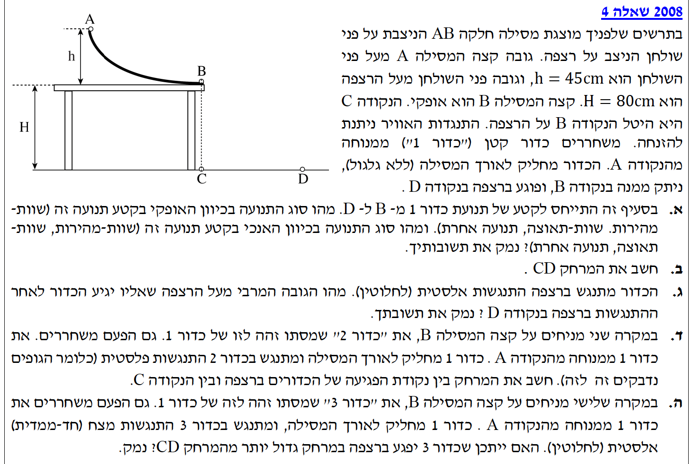

פתרון מלא ומוסבר צעד-אחר-צעד, הכולל קינמטיקה ושימור תנע ואנרגיה.
עודכן:--- --:--:--
מבט כללי והכנת נתונים (שלב 0)
לפני שנתחיל לפתור, נקרא את נתוני הבעיה ונוודא שכל היחידות הן במערכת MKS (מטר, קילוגרם, שנייה). נתונה לנו מסילה חלקה (ללא חיכוך) וזריקה אופקית (ללא התנגדות אוויר).
גובה המסילה: \( h = 45\text{ cm} = 0.45\text{ m} \)
גובה השולחן: \( H = 80\text{ cm} = 0.8\text{ m} \)
תאוצת הכובד: \( g = 10\text{ m/s}^2 \)
מהירות התחלתית בנקודה A: \( v_A = 0\text{ m/s} \) (מכיוון שמשוחרר ממנוחה).

[תמונת השאלה המקורית]לא נמצאה תמונה בשם question-image.png באותה תיקייה.
סעיף א'
מה נתון: הכדור ניתק מהמסילה בנקודה B ונע באוויר עד לנקודה D. התנגדות האוויר ניתנת להזנחה. מהירותו ההתחלתית בעת הניתוק היא אופקית לחלוטין.
מה מחפשים: אפיון סוג התנועה (שוות מהירות, שוות תאוצה, תנועה אחרת) של הכדור בקטע B ל-D, תוך התייחסות לציר האופקי ולציר האנכי בנפרד, כולל נימוק.
נוסחאות מהדף: \( \Sigma\vec{F} = m\vec{a} \)
פתרון צעד-אחר-צעד:
נסרטט תחילה תרשים כוחות (FBD) עבור הכדור בזמן מעופו באוויר בין נקודה B לנקודה D:
בציר האופקי (x): אין כוחות שפועלים על הכדור כיוון שהזנחנו את התנגדות האוויר. לכן, לפי החוק השני של ניוטון, שקול הכוחות שווה לאפס:
כיוון שגודל התאוצה הוא אפס, תנועת הכדור בציר האופקי מוגדרת כתנועה שוות-מהירות.
בציר האנכי (y): הכוח היחיד שפועל על הגוף הוא כוח הכובד. אם נבחר ציר y שהכיוון החיובי שלו הוא כלפי מטה, נקבל משוואת כוחות פשוטה:
\[ \Sigma F_y = mg \implies m \cdot a_y = m \cdot g \implies a_y = g \]
כיוון שהתאוצה קבועה (וגודלה \( g = 10\text{ m/s}^2 \)), תנועת הכדור בציר האנכי היא תנועה שוות-תאוצה.
מסקנה סופית: בציר האופקי יש תנועה שוות-מהירות, ובציר האנכי מתקיימת תנועה שוות-תאוצה.
הערת מורה:
חשוב לזכור! מרגע שהכדור עוזב את השולחן, הוא נמצא במצב של נפילה חופשית, כלומר תנועה תחת השפעת כוח הכובד בלבד. עקרון אי-התלות בין הצירים של גלילאו קובע כי אפשר לנתח כל ציר באופן נפרד לחלוטין. המשמעות היא שהמהירות האופקית לא משפיעה על קצב הנפילה, וקצב הנפילה לא משפיע על המהירות האופקית.
סעיף ב'
מה נתון: מסתו של כדור 1 אינה ידועה ונסמנה אותה באות \( m \). גובה המסילה הוא \( h = 0.45\text{ m} \), וגובה השולחן הוא \( H = 0.8\text{ m} \). המסילה מוגדרת כחלקה ולכן פועלים כוחות משמרים בלבד או כוחות שניצבים לתנועה, כמו הנורמל, אשר אינם מבצעים עבודה.
מה מחפשים: לחשב את המרחק האופקי \( CD \), שהוא למעשה הטווח האופקי שעבר הכדור מהרגע שעזב את קצה השולחן ועד הרגע שבו פגע ברצפה.
נבחר את מישור הייחוס לאנרגיה הפוטנציאלית הכובדית כך שיהיה בגובה השולחן ולכן מתקיים \( U_G = 0 \) לאורך המסילה האופקית. בנקודה A לכדור יש רק אנרגיה פוטנציאלית כובדית, ובנקודה B רק אנרגיה קינטית. נשווה ביניהן לפי חוק שימור אנרגיה מכנית:
\[ mgh = \frac{1}{2}mv_B^2 \]
נצמצם במסה \( m \), מכיוון שהיא בהכרח שונה מאפס, ונחלץ את המהירות:
מכיוון שהמסילה הופכת להיות אופקית לחלוטין בנקודה B, המהירות היא בעלת רכיב אופקי בלבד ולכן מתקיים \( v_{0x} = 3\text{ m/s} \), וכן מתקיים \( v_{0y} = 0 \).
שלב 2: מציאת זמן הנפילה באוויר
נתבונן בתנועה המתרחשת בציר y בלבד. נבחר את ראשית הצירים בנקודה B וכיוון חיובי כלפי מטה. לפיכך המיקום ההתחלתי הוא \( y_0 = 0 \), המהירות ההתחלתית היא \( v_{0y} = 0 \), והתאוצה היא כמובן \( a = g = 10\text{ m/s}^2 \). הרצפה ממוקמת במיקום \( y = H = 0.8\text{ m} \). נציב במשוואת המיקום זמן:
מסקנה: המרחק האופקי CD שעבר הכדור הוא \( 1.2\text{ m} \).
הערת מורה:
חלוקה לשלבים מוגדרים היטב היא המפתח להצלחה בבעיות משולבות! חלקו את הבעיה לתחנות ברורות: מתחנה A ל-B השתמשנו בשימור אנרגיה, וזאת משום שהמסילה מעוקמת ולכן התאוצה משתנה ולא קבועה, כך שמשוואות קינמטיקה כלל לא מתאימות כאן. לעומת זאת, מתחנה B ל-D המסלול מתרחש כולו באוויר, אז שם כבר יכולנו לעבור להשתמש בבטחה במשוואות קינמטיקה. תמיד שאלו את עצמכם לפני כל שלב: אילו כלים מתאימים לאיזה מקטע?
סעיף ג'
מה נתון: הכדור מתנגש בקרקע בנקודה D בהתנגשות המוגדרת כאלסטית לחלוטין, כלומר אין כלל איבוד של אנרגיה קינטית (או אנרגיה מכנית כוללת) במהלך ההתנגשות עם הרצפה.
מה מחפשים: למצוא את הגובה המרבי מעל הרצפה שאליו יגיע הכדור לאחר ההתנגשות, בתוספת נימוק פיזיקלי.
נפתור סעיף זה בדרך האלגנטית ביותר - באמצעות עקרון שימור האנרגיה המכנית. בנקודה B (רגע העזיבה של השולחן), הכדור נמצא בגובה \( H = 0.8\text{ m} \) ויש לו מהירות אופקית בלבד שגודלה \( v_x = 3\text{ m/s} \). האנרגיה המכנית הכוללת שלו בנקודה זו מורכבת מאנרגיה פוטנציאלית ואנרגיה קינטית:
\[ E_B = mgH + \frac{1}{2}mv_x^2 \]
הכדור נופל, פוגע בקרקע בהתנגשות אלסטית לחלוטין (ללא כל איבוד אנרגיה מכל סוג שהוא) וניתז כלפי מעלה. הוא ימשיך לעלות בדומה לזריקה משופעת כלפי מעלה, עד שהמהירות האנכית שלו תתאפס לחלוטין (\( v_y = 0 \)). נקודה זו מוגדרת כשיא הגובה החדש שלו, ונסמן אותה באות \( h_{max} \).
חשוב לזכור שבשיא הגובה, הכדור עדיין נע אופקית, שכן המהירות האופקית שלו \( v_x \) נשמרת קבועה לאורך כל התנועה כולה עקב היעדר כוחות אופקיים. לכן, האנרגיה המכנית בשיא הגובה היא:
\[ E_{max} = mgh_{max} + \frac{1}{2}mv_x^2 \]
מכיוון שהאנרגיה המכנית נשמרת לאורך כל התהליך (\( E_B = E_{max} \)), נשווה פשוט בין שני הביטויים שקיבלנו:
ניתן לראות בקלות שאיבר האנרגיה הקינטית האופקית זהה בשני הצדדים ולכן הוא מצטמצם ממשוואה. נצמצם גם את \( mg \) משני האגפים שנותרו ונקבל מיד:
\[ H = h_{max} \implies h_{max} = 0.8\text{ m} \]
מסקנה: הגובה המרבי אליו יגיע הכדור הוא בדיוק 0.8 מטרים, שזהו כמובן גובה השולחן המקורי. הנימוק הוא שמכוח חוק שימור האנרגיה המכנית, ומכיוון שהמהירות האופקית זהה לחלוטין בשני המצבים (בנקודה B ובשיא הגובה), נגזר מתמטית שגם הגובה חייב להיות זהה לחלוטין.
הערת מורה:
שימוש בחוק שימור האנרגיה המכנית הופך את הפתרון בסעיף זה לאלגנטי, קצר ואינטואיטיבי מאוד, ולכן לא מומלץ להסתבך עם פתרונות קינמטיים ארוכים! יחד עם זאת, בהחלט ניתן היה לפתור זאת גם בעזרת קינמטיקה: מכיוון שההתנגשות ברצפה היא אלסטית, הרכיב האנכי של המהירות פשוט משנה את כיוונו (המהירות האנכית כלפי מעלה שווה בגודלה בדיוק למהירות הפגיעה כלפי מטה). מכאן, תנועת העלייה כלפי מעלה סימטרית לחלוטין לתנועת הנפילה כלפי מטה שהתרחשה קודם, ולכן הכדור חייב לחזור לאותו הגובה.
סעיף ד'
מה נתון: מניחים בנקודה B כדור 2 אשר מסתו שווה בדיוק למסתו של כדור 1, כלומר \( m_1 = m_2 = m \). כדור 1 מחליק שוב מנקודה A ומתנגש בכדור 2 בהתנגשות המוגדרת כפלסטית לחלוטין, כלומר הגופים נדבקים זה לזה ונעים יחד מנקודה זו והלאה.
מה מחפשים: למצוא את המרחק האופקי החדש הנמדד בין נקודה C לבין נקודת הפגיעה החדשה של שני הכדורים הדבוקים על הרצפה.
נחשב את המהירות האופקית המשותפת של שני הכדורים מיד רגע אחד לאחר ההתנגשות ביניהם. לפני ההתנגשות, מהירותו של כדור 1 היא ידועה כ- \( v_1 = 3\text{ m/s} \), כפי שחישבנו בסעיף ב', ואילו מהירותו של כדור 2 היא מנוחה, \( v_2 = 0 \).
לפני התנגשות
➔
אחרי התנגשות (פלסטית)
משוואת חוק שימור התנע בציר האופקי, תוך סימון המהירות המשותפת החדשה באות \( u \):
\[ m \cdot v_1 + m \cdot 0 = (m + m) \cdot u \]
\[ 3m = 2m \cdot u \implies u = \frac{3m}{2m} = 1.5\text{ m/s} \]
המהירות האופקית החדשה שממנה הגוף המשולב מתחיל את תנועת הזריקה באוויר היא \( v_{0x}^{new} = 1.5\text{ m/s} \).
שלב 2: תנועה באוויר וחישוב המרחק
זמן השהייה באוויר תלוי אך ורק בגובה ההתחלתי ובמהירות האנכית ההתחלתית בלבד. מאחר ושני נתונים אלו כלל לא השתנו (הם עדיין נזרקים מגובה של \( H=0.8\text{ m} \) עם מהירות אנכית התחלתית שווה לאפס), זמן הנפילה נשאר בדיוק זהה למה שחישבנו קודם בסעיף ב', והוא \( t = 0.4\text{ s} \).
מסקנה: המרחק החדש מנקודה C שבו יפגעו שני הכדורים הדבוקים ברצפה הוא 0.6 מטרים.
הערת מורה:
הבנת אי-התלות בין הצירים עומדת כאן שוב למבחן! למרות שהמסה כעת כפולה לחלוטין ממה שהייתה קודם, והמהירות האופקית קטנה בדיוק פי שניים, כל זה משפיע אך ורק על התנועה בציר X. אם נביט על משוואת התנועה בציר Y שהיא \( y = \frac{1}{2}gt^2 \), נגלה כי המסה בכלל לא מופיעה בתוכה! המסקנה החשובה היא שגופים כבדים וקלים נופלים בדיוק באותו הקצב בהנחה שאנו מזניחים את התנגדות האוויר.
סעיף ה'
מה נתון: הפעם מניחים בנקודה B כדור שלישי הנקרא כדור 3, אשר מסתו זהה למסתו של כדור 1, כך ש- \( m_1 = m_3 = m \). ההתנגשות החדשה ביניהם מוגדרת כאלסטית לחלוטין בממד אחד.
מה מחפשים: לבחון האם ייתכן שכדור 3 יפגע בסופו של דבר ברצפה במרחק שהוא גדול יותר מהמרחק המקורי CD שחושב בסעיף ב', ולנמק את התשובה.
נחשב את המהירות המדויקת של כדור 3 מיד לאחר סיום תהליך ההתנגשות. נסמן תחילה את המהירויות לפני רגע ההתנגשות: מהירותו של כדור אחד היא \( v_1 = 3\text{ m/s} \), ומהירותו של כדור שלוש היא מנוחה, כלומר \( v_3 = 0 \). כמו כן נסמן את המהירויות שלהם לאחר סיום ההתנגשות כ- \( u_1 \) ו- \( u_3 \) בהתאמה.
המשוואה הראשונה שלנו היא שימור התנע:
\[ m \cdot v_1 + m \cdot 0 = m \cdot u_1 + m \cdot u_3 \]
נצמצם במסה \( m \) שמופיעה בכל האיברים ונקבל:
\[ v_1 = u_1 + u_3 \implies 3 = u_1 + u_3 \]
המשוואה השנייה שלנו היא משוואת ההתנגשות האלסטית הלקוחה מדף הנוסחאות:
כעת נציב את התוצאה הזו בחזרה באחת המשוואות הקודמות כדי למצוא את המהירות של הכדור הראשון, \( u_1 \):
\[ u_1 = 3 - u_3 = 3 - 3 = 0\text{ m/s} \]
המסקנה העולה מן החישוב המתמטי היא שלאחר סיום ההתנגשות, כדור 1 נעצר לחלוטין במקומו, בעוד שכדור 3 ניתק מהשולחן ומתחיל לנוע בדיוק באותה המהירות שבה היה ניתק כדור 1 בסעיף ב' המקורי, כלומר מהירות אופקית של \( v_{0x} = 3\text{ m/s} \).
מכיוון שמהירות הזריקה האופקית של כדור 3 היא זהה לחלוטין לזו שהייתה לכדור 1 במקרה המקורי, וכאמור זמן הנפילה אל הקרקע תמיד נשאר זהה בתנאים אלו, המסקנה היא שכדור 3 יעבור בדיוק את אותו המרחק האופקי המקורי CD שחושב בסעיף ב' (שהוא 1.2 מטרים).
מסקנה: התשובה היא לא, לא ייתכן שכדור 3 יפגע במרחק שגדול מהמרחק CD המקורי. נימוק: בהתנגשות אלסטית חזיתית המתרחשת בין שתי מסות זהות לחלוטין, הגופים למעשה "מחליפים" ביניהם את המהירויות. לכן כדור 3 יוצא עם מהירות התחלתית אופקית שזהה בדיוק לזו שהייתה לכדור 1 בתחילה, ולפיכך הטווח האופקי שעליו לעבור יהיה שווה בדיוק לאותו טווח CD, ולא גדול ממנו בשום מצב.
הערת מורה:
יש כאן כלל אצבע מצוין לפיזיקה שכדאי מאוד לזכור: כאשר שני גופים שהם בעלי מסות זהות לחלוטין מתנגשים זה בזה התנגשות שהיא אלסטית לחלוטין בממד אחד, הם פשוט מחליפים ביניהם את המהירויות! זהו קיצור דרך מחשבתי אדיר: ברגע שזיהיתם בשאלה את המילים "מסות זהות" ביחד עם "התנגשות אלסטית", אתם כבר יכולים לדעת מיד בראשכם מהי התוצאה הסופית הצפויה, ולהשתמש במשוואות המתמטיות רק על מנת להוכיח זאת באופן רשמי בבחינת הבגרות.
נוסח השאלה המקורית
[תמונת השאלה המקורית]לא נמצאה תמונה בשם question-image.png.